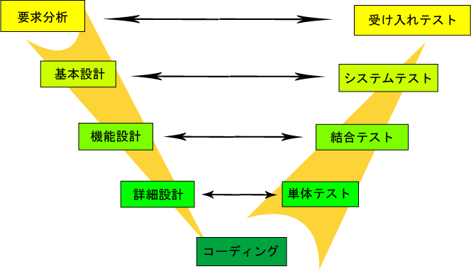

結合テストでコーディングミスを見つけてはだめ
Update: 2022-02-21
※ 以下の文章では「設計」と「仕様」、それから「プログラム」と「コード」と「実装」（会社や人によっては「製造」）、さらに「フェーズ」と「工程」といった用語を特に区別せずに用いています。用語が違うとそればかりが気になるのか後の話を聞いてくれない人がいるのですが、特定の方法論や会社等の組織の基準を前提に書いたものではありません。
ウォーター・フォールとか V-model といったオーソドックスなプロセスで開発している場合も、インクリメンタルだとかアジャイルだとかのプロセスで開発している場合も、単体テスト ( Unit test ) より後の工程でコーディング・ミスが見つかるのは良くありません。コーディング・ミスはコード・レビューと単体テストで見つけるものです。
比較的単純な V-model の概念は、この Wikipedia 日本語版から借りてきたイメージのようになります。

{kind=link}
単体テストでやること
会社やプロジェクトによって工程の分け方や名称が異なるでしょうし、テスト・ファーストであれば設計の作業の一部はテスト・プログラムの作成になります。その辺は自分がやっていることにあわせて読み替えてください。とはいえ、たいていの場合、「単体テスト」もしくは "Unit test" と呼ばれる工程があるでしょう。そこで、
- 一番下のレベルの仕様（上記の図では詳細設計）の通りに実装していること。
- 個々の設計書では定義されない共通のルール（エラー処理やログ出力など）に従って実装していること。
といったことをテストします。上記の図では「詳細設計」と「単体テスト」の間に矢印が引かれていますが、これは、詳細設計の通りにコーディングされていることを単体テストで確認する、という意味です。
当然のことながら、プログラムのすべての行をテストすること ( coverage ) が求められます。単に「すべての行」ではなく、分岐やループの扱いなどを細かく決めている場合もあるでしょう。いずれにしても本番と同じような環境とデータでは実施不可能なテスト項目がありますから、単体テストのためのデータや、ドライバ・スタブ・モック等を使う必要があります。したがって、この工程で摘出すべき問題を、後の工程に残してはいけません。
結合テストでやること
では、単体テストの後の工程の結合テストにどのような問題が摘出されないまま残ってよいのかというと、それは詳細設計の問題です。上記の図では「機能設計」と「結合テスト」の間に矢印が引かれています。これは、機能設計で定義した仕様を満たす詳細設計になっていることを結合テストで確認する、という意味です。
したがって、結合テストで摘出すべき問題は、「機能設計で定義した仕様を満たす詳細設計になっていないこと」です。「詳細設計の通りにコーディングされていないこと」を結合テストで見つけてはいけません。それは単体テストで済ませていなければならないことです。その前に、詳細設計の通りにコーディングされていない状態では、結合テストをしても「機能設計で定義した仕様を満たす詳細設計になっていないこと」のテストができません。詳細設計で定義された内容とは違うコードでテストしてしまうことになるからです。
また、結合テストで見つかった問題の対処のためには設計書とコードの両方の修正が必要なはずです。
「修正が必要なのは設計書だけです」という場合、コードが正しいのは偶然か、そうでなければ設計担当者がよくわかってないけどでコーディング担当者が本当の仕様を知っているという古いシステムにありがちな状態なのか、どちらかでしょう。
「修正が必要なのはコードだけでした」という場合、単体テストに抜けがあったのか、詳細設計に必要な処理が書かれていなくてさらにこの対処の後も欠落したままなのかの、どちらかでしょう。
どちらの場合でも、確実に言えることは、一番下のレベルの仕様（上記の図の場合、詳細設計）とコードが合っていません。そして、それは単体テスト ( もしくはその前のコード・レビュー ) で見つけなければならないことなのに、見つけられていません。
コーディング・ミスが結合テストで見つかったら
コーディング・ミスが結合テストで見つかった場合、そのコードの問題そのものだけでなく、開発のプロセスの問題を解決しなければなりません。「修正して、修正の影響範囲をテストし直しました」だけではだめです。たぶん、次のようなことを見直す必要があるだろうと思います。問題の根源がプロセスの定義や担当者のスキルだということになれば、関係するところを点検し直すことにもなります。
- 単体テストの実施方法や記録に問題はなかったのか？
- 単体テストで摘出した問題の修正の確認に問題はなかったのか？
- 単体テストの評価項目は十分だったのか？
- 単体テストの評価項目の作成の基準は適切だったのか？
- コード・レビューは基準通りに実施されたのか？
- コード・レビューで摘出した問題の修正の確認に問題はなかったのか？
- コード・レビューの基準が適切だったのか？
- コーディングの基準は適切だったのか？
- 担当者のスキルは十分だったのか？
Tag: process v-model test